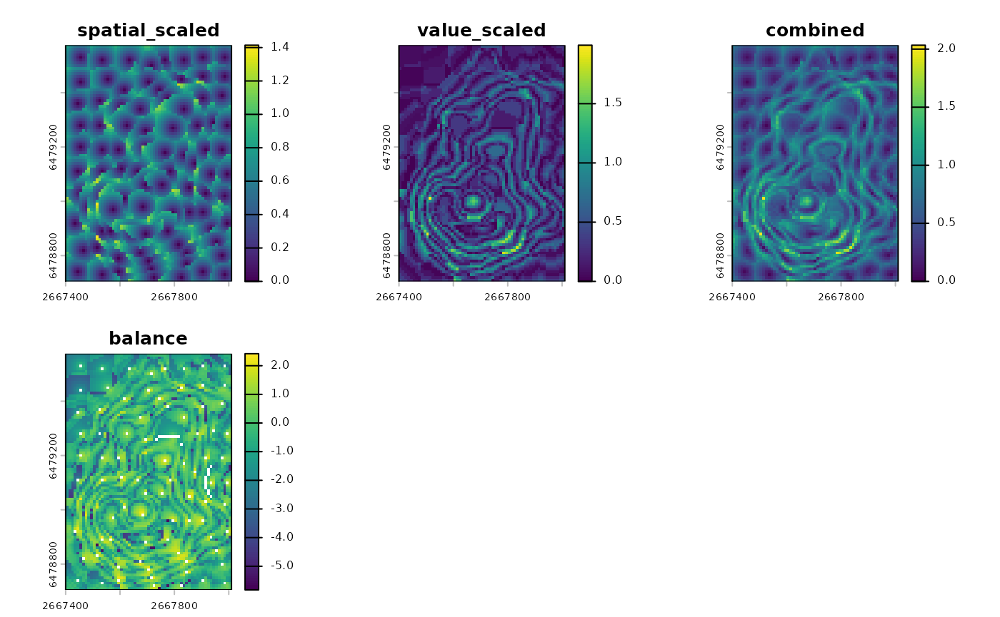
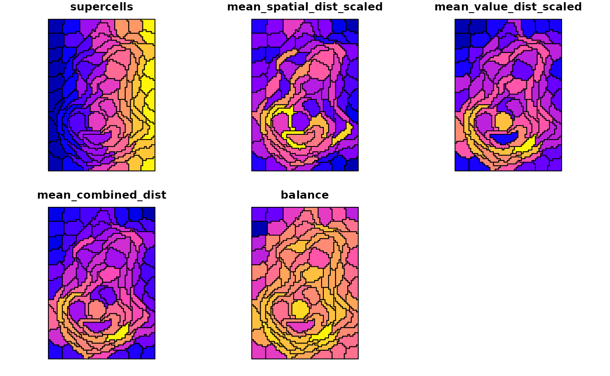

Evaluation and diagnostics
Jakub Nowosad
2026-02-10
Source:vignettes/articles/v2-evaluation.Rmd
v2-evaluation.RmdThis vignette shows how to evaluate supercells and interpret the diagnostics. The metrics quantify spatial compactness, value homogeneity, and their balance.
The metrics are derived from the same combined distance used during segmentation:
where
is the spatial distance in grid-cell units,
is the value-space distance defined by dist_fun, and
is compactness.
All examples use the volcano raster for simplicity, but
the same workflow applies to multi-layer rasters.
library(supercells)
library(terra)
vol <- terra::rast(system.file("raster/volcano.tif", package = "supercells"))
vol_sc <- sc_slic(vol, step = 8, compactness = 7)Pixel metrics
Pixel metrics provide a map of distances from each pixel to its
supercell center. They are useful for diagnosing local failures, such as
areas where the supercells are too large or too irregular. Pixel metrics
are provided with the sc_metrics_pixels() function, which
accepts the original raster and the supercell polygons1, and returns a
multi-layer raster with the requested metrics.
The pixel metrics include four layers2, each with a specific interpretation and a simple definition:
-
spatial: , the distance from each pixel to its supercell center in grid-cell units (unless the input supercells were created withstep = use_meters(...), in which case distances are reported in map units). Lower spatial values indicate cells that are closer to the center and more compact supercells, while higher values indicate cells that are farther from the center and may indicate irregular shapes or outliers. -
value: , the distance from each pixel to its supercell center in the value space defined by yourdist_fun. Lower value distances indicate more homogeneous supercells, while higher values indicate more heterogeneous supercells or outliers. -
combined: , the combined distance used to assign pixels to centers. This is mainly useful for ranking pixels or supercells within a single run – it is not directly comparable across runs with different parameters or distance functions. -
balance: , the signed log ratio of scaled value to scaled spatial distance. Negative values indicate spatial dominance and positive values indicate value dominance.
By default, sc_metrics_pixels() returns
spatial, value, combined, and
balance, and uses scale = TRUE. With scaling
on, the spatial and value layers are returned as
spatial_scaled and value_scaled. Scaling
divides spatial distance by step (or by step
in map units) and value distance by compactness (or by
per-supercell values for SLIC0). This makes the spatial and value
components comparable and keeps the balance metric interpretable. If you
want raw units, set scale = FALSE.
pixel_metrics <- sc_metrics_pixels(vol, vol_sc)
terra::plot(pixel_metrics, nc = 3)
Supercell metrics
Metrics on the supercell level summarize each polygon with a single
value for each metric. They are useful for quality screening, outlier
detection, or joining metrics to attributes. They are calculated with
the sc_metrics_supercells() function, which accepts the
original raster and the supercell polygons, and returns an
sf object with one row per supercell and the requested
metrics as columns.
The supercell metrics include four variables, each with a specific interpretation and definition as per-supercell means:
-
mean_spatial_dist: , the average spatial distance from pixels to the supercell center. Lower values indicate more compact shapes. -
mean_value_dist: , the average value distance from pixels to the supercell center in the value space defined bydist_fun. Lower values indicate more homogeneous supercells. -
mean_combined_dist: , the average combined distance within each supercell. -
balance: , the signed log ratio of scaled distances.
supercell_metrics <- sc_metrics_supercells(vol, vol_sc)
head(supercell_metrics)
#> Simple feature collection with 6 features and 5 fields
#> Geometry type: POLYGON
#> Dimension: XY
#> Bounding box: xmin: 2667400 ymin: 6479045 xmax: 2667500 ymax: 6479575
#> Projected CRS: NZGD49 / New Zealand Map Grid
#> supercells mean_spatial_dist_scaled mean_value_dist_scaled mean_combined_dist
#> 1 1 0.4195350 0.08554244 0.4325501
#> 2 2 0.4539066 0.04427186 0.4587638
#> 3 3 0.4003193 0.14495014 0.4452615
#> 4 4 0.4570244 0.14389321 0.4939813
#> 5 5 0.4450208 0.31268263 0.5773152
#> 6 6 0.4680141 0.20287698 0.5398852
#> balance geometry
#> 1 -1.5901344 POLYGON ((2667400 6479575, ...
#> 2 -2.3275422 POLYGON ((2667400 6479495, ...
#> 3 -1.0158726 POLYGON ((2667440 6479415, ...
#> 4 -1.1556654 POLYGON ((2667460 6479345, ...
#> 5 -0.3529323 POLYGON ((2667460 6479265, ...
#> 6 -0.8358987 POLYGON ((2667450 6479175, ...The output is an sf object with one row per supercell
and the metrics as columns. You can map any metric by plotting a single
column.
plot(supercell_metrics)
Global metrics
Global metrics provide a single-row summary and are best for
comparing different outputs or parameter settings. They are calculated
with sc_metrics_global(), which accepts the original raster
and the supercell polygons and returns a data.frame. In
these metrics, each supercell contributes equally to the global
averages.3
The global metrics include the same four distance summaries as the supercell metrics, averaged across supercells (each supercell has equal weight):
-
mean_spatial_dist: the mean of per-supercell . Lower values indicate more compact shapes. -
mean_value_dist: the mean of per-supercell in the value space defined bydist_fun. Lower values indicate more homogeneous supercells. -
mean_combined_dist: the mean of per-supercell , useful for ranking or comparing runs. -
balance: , the mean of per-supercell balance values.
By default, sc_metrics_global() returns the scaled
distances. When scale = TRUE, the spatial and value
summaries are returned as mean_spatial_dist_scaled and
mean_value_dist_scaled. If you want raw units, set
scale = FALSE.
global_metrics <- sc_metrics_global(vol, vol_sc)
global_metrics
#> step compactness compactness_method n_supercells mean_spatial_dist_scaled
#> 1 8 7 constant 88 0.4718607
#> mean_value_dist_scaled mean_combined_dist balance
#> 1 0.3701397 0.6517259 -0.3367309You may use the global metrics to compare parameter settings, for
example by varying step or compactness.
However, remember to keep the same dist_fun that you used
for the supercell generation to make comparisons meaningful. Higher
compactness typically lowers spatial distances while increasing value
distances, so look for balanced tradeoffs rather than a single
minimum.
vol_sc_low <- sc_slic(vol, step = 8, compactness = 1)
metrics_higher <- sc_metrics_global(vol, vol_sc)
metrics_lower <- sc_metrics_global(vol, vol_sc_low)
rbind(higher_compactness = metrics_higher, lower_compactness = metrics_lower)
#> step compactness compactness_method n_supercells
#> higher_compactness 8 7 constant 88
#> lower_compactness 8 1 constant 90
#> mean_spatial_dist_scaled mean_value_dist_scaled
#> higher_compactness 0.4718607 0.3701397
#> lower_compactness 0.5500066 2.1412253
#> mean_combined_dist balance
#> higher_compactness 0.6517259 -0.3367309
#> lower_compactness 2.3003626 1.1923986When using compactness = use_adaptive(), the value
scaling is per-supercell. This improves local adaptation, but it also
means metrics are not directly comparable to fixed-compactness outputs.
In this case, you can still compare the spatial metrics, but the value
metrics will reflect the local scaling rather than the original value
distances.
Feedback and related tools
We welcome feedback on the metric names, missing metrics, or the overall function syntax – if you have suggestions for alternative diagnostics or different summaries, please let us know. For additional region-based measures, see the CRAN package regional at https://cran.r-project.org/package=regional.